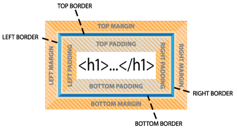

A CSS Primer
Cascading Style Sheets were actually invented a long time ago when HTML was in it infancy. But it not well understood and other methods of formatting web content had already been popularized and were dominating the market. It took many years and several popular books to get CSS to be recognized as a superior method for formatting webpages.
To fully understand how CSS works, there are several concepts that you have to learn and practice until they become second nature.
The Box Model
The first concept concerns what has come to be known as "the box model". Browsers reads HTML code, interpret its structure and formatting, and then display the webpage. CSS does its work by stepping between HTML and the browser, redefining how each element should be rendered. It imposes an imaginary box around each element and then enables you to format almost every aspect of how that box and its contents are displayed.

CSS permits you to specify fonts, line spacing, colors, borders, background shading and graphics, margins, and padding, among other things. In most instances these boxes are invisible, and although CSS gives you the ability to format them, it does not require you to do so.
CSS defines each HTML element into one of three basic categories: Block, inline or hidden.
Block elements by default:
- Occupy the full width of the screen or their parent element, unless an alternative width is specified.
- Stack on top of other block elements, regardless of their width.
- Dimensions are calculated by adding up width, height, padding, borders and margins.
- Will expand vertically to the height of its content, plus any padding.
- Include div, h1-h6, p, li, among others.
Inline elements by default:
- Appear within the body of another element
- Are only as wide as its content.
- Do not honor width or height specifications.
- Do honor left and right padding and margin specifications.
- Do not honor top and bottom padding or margin specifications.
- Include span, em, strong among others.
Hidden elements by default
- Do not appear in the browser
- Take up no space
- Do not affect the flow or appearance of other elements
- Include head, meta, script, style among others.
Cascade Theory
The cascade theory describes how the order and placement of rules in the style sheet or on the page affects the application of styling. In other words, if two rules conflict, which one wins out? The basic concept is that the rule closest to the element wins. Webpages often contain multiple style sheets and these may contain duplicative styling. Many companies do this on purpose, especially when they have multiple departments or divisions. Corporate headquarters will supply a "main" style sheet and allow the separate divisions to override these settings by inserting their own style sheets afterwards.
Cascade in Practice
The styles affecting each element are usually applied (when present) in the following order, the last being the most powerful:
- Browser default style sheet
- User preferences
- Author preferences
- Inline styling
- !Important declarations (Author)
- !Important declarations (User)
Inheritance Theory
The inheritance theory describes how one rule can be affected by one or more previously declared rules. Inheritance can affect rules of the same name as well as rules that format parent elements or elements that nest one inside another. Inheritance is tricky. It is not an all or nothing proposition. If a generic rule applies a color or size to one or more elements, this specification can be inherited if that element is not styled by a more specific default setting or targetted rule.
Inheritance in Practice
The styles affecting each element are usually applied (when present) in the following order, the last being the most powerful:
- Browser default style sheet
- User preferences
- Linked or embedded style sheets
- General styles
- Specific styles
Descendant Theory
CSS formatting can be very confusing for designers coming from the print world. These designers are accustomed to applying styles directly to text and objects one at a time. If you copy the text and paste it elsewhere, the formatting comes along. In some cases, styles can be based on one another, but this relationship is intentional.
On the other hand, CSS formatting of one element can overlap or influence another unintentionally via inheritance. When one element is inserted within another, it can adopt some aspects of its parent's styling. In fact, the descendant theory describes how formatting can be targetted to a particular element based on its position relative to other elements.
By constructing a selector using multiple elements in sequence, in conjunction with ID and class attributes, you can formatting specific instances of text or other content as it appears within your webpage. It may be helpful to think of it as the elements formatting themselves. Using CSS in this way changes the way we fundamentally think of formatting in general. Styling is no long intrinsic to the element itself, but to the entire page and the way the code is structured. You don’t apply the formatting to the element, per se, as much as the elements adopt styling from their position within the code.
Specificity
Specificity describes how browsers determine what formatting to apply when two or more rules conflict. Some refer to this as weight—giving certain rules more priority based on order (cascade), proximity, inheritance, and descendant relationships. Such conflicts are the bane of most web designers’ existence and can waste hours of time in troubleshooting errors in CSS formatting. Let’s take a look at how specificity affects the weight of some sample rules.
One technique that designers use to determine which rule is more specific than another is by giving numeric values to each part of the selector. Each HTML tag gets 1 point, each class gets 10 points, each ID gets 100 points and inline style attributes get 1000 points. Then, by adding up the component values of the selector its specificity can be calculated and compared to other rules.
Examples:
* (wildcard) { } 0 + 0 + 0 + 0 = 0 points
h1 { } 0 + 0 + 0 + 1 = 1 point
a:hover { } 0 + 0 + 0 + 2 = 2 points
ul li { } 0 + 0 + 0 + 1 = 2 points
.class { } 0 + 0 + 10 + 0 = 10 points
.class h1 { } 0 + 0 + 10 + 1 = 11 points
#id { } 0 + 100 + 0 + 0 = 100 points
#id.class { } 0 + 100 + 10 + 0 = 110 points
#id.class h1 { } 0 + 100 + 10 + 1 = 111 points
style=" " { } 1000 + 0 + 0 + 0 = 1000 points